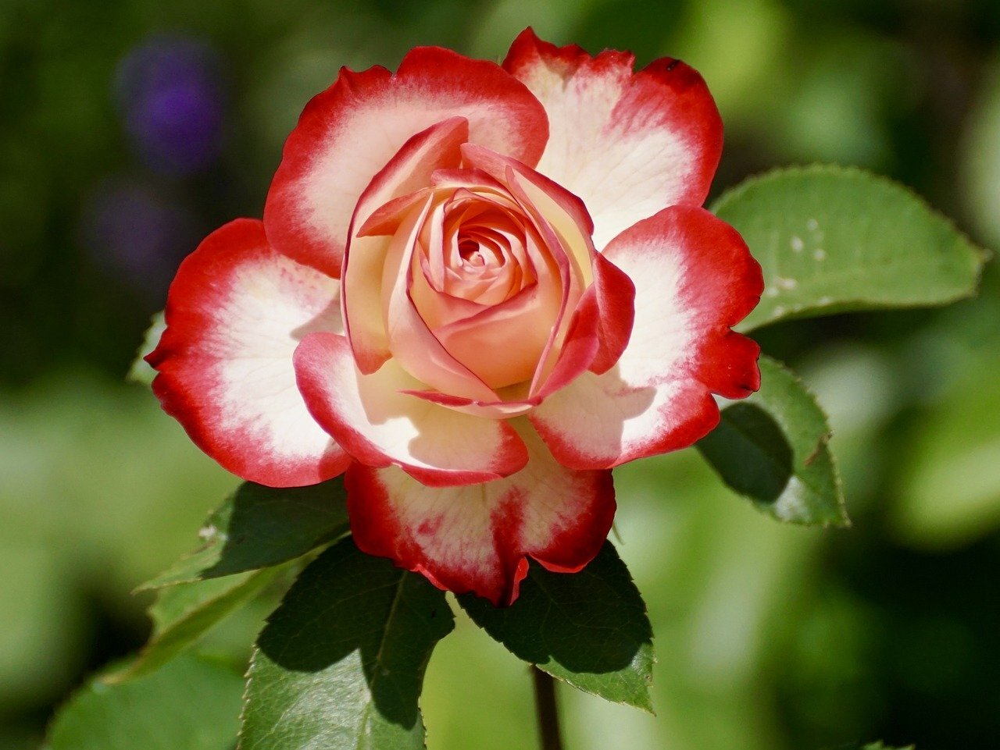

식물에 대한 페이지

장미에 대한 정의
장미 관리는 생각보다 쉽기 때문에 누구나 성공적으로 키울 수 있습니다.
배수가 잘 되는 햇볕이 잘 드는 곳에 장미를 심고 풍성한 꽃을 보기 위해 정기적으로 비료를 줍니다.
토양을 촉촉하게 유지하기 위해 골고루 물을 줍니다. 이른 봄에 장미 덤불을 심습니다.
그리고 흰 가루병이나 검은 반점과 같은 질병에 주의하시면 됩니다.
장미 재배 방법을 배우기 위해 다음 8가지 필수 규칙을 알아봅시다.
장미꽃 관련 정보 링크 소개
장미꽃에 대한 자세한 정보는 이
링크를 참조하십시오.